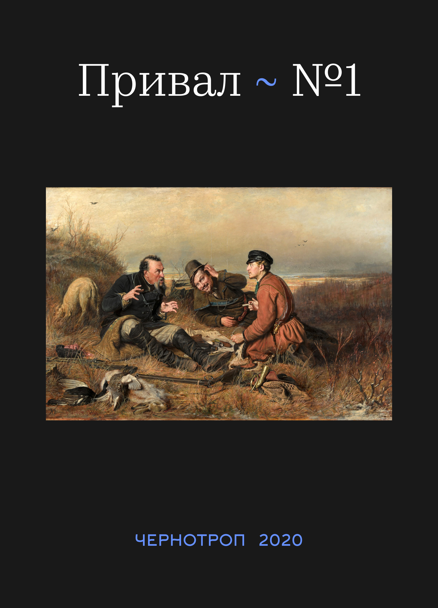

<!DOCTYPE html>
<html prefix="og: http://ogp.me/ns#"></html>
<head>
  <meta charset="utf-8"/>
  <meta name="viewport" content="width=device-width, initial-scale=1.0"/>
  <meta property="og:url" content="http://chernotrop.reviews/rest-01"/>
  <meta property="og:type" content="article"/>
  <meta property="og:title" content="Привал, сезон первый"/>
  <meta property="og:description" content="Десять недель телеграм-канал «Чернотроп» советовал вам по одному реалистическому рассказу, достойному внимания. Пора подвести итоги."/>
  <meta property="og:image" content="http://chernotrop.reviews/img/rest-01-og.jpg"/>
  <meta property="og:image:width" content="1200"/>
  <meta property="og:image:height" content="600"/>
  <link href="https://fonts.googleapis.com/icon?family=Material+Icons" rel="stylesheet"/>
  <link rel="stylesheet"/><!-- Yandex.Metrika counter --> <script type="text/javascript" > (function(m,e,t,r,i,k,a){m[i]=m[i]||function(){(m[i].a=m[i].a||[]).push(arguments)}; m[i].l=1*new Date();k=e.createElement(t),a=e.getElementsByTagName(t)[0],k.async=1,k.src=r,a.parentNode.insertBefore(k,a)}) (window, document, "script", "https://mc.yandex.ru/metrika/tag.js", "ym"); ym(56951962, "init", { clickmap:true, trackLinks:true, accurateTrackBounce:true, webvisor:true, trackHash:true }); </script> <noscript><div></div></noscript> <!-- /Yandex.Metrika counter -->
  <title>Привал, сезон первый</title>
<link href="./css/style.bundle.css" rel="stylesheet"></head>
<body class="body_light">
  <header class="header header_dark">
    <div class="header__logo">
      <div class="logo logo_dark"><a class="logo__link" href="/">ЧЕРНОТРОП</a></div>
    </div>
    <nav class="header__menu"><a class="menu-item menu-item_active" href="index.html" target="blank">главная</a><a class="menu-item" href="contacts.html">контакты</a><a class="menu-item" href="http://ttttt.me/blacktrope" target="blank">telegram-канал</a>
    </nav>
    <div class="header__menu_mobile" id="modeValue"><a href="menu.html">
        <svg xmlns="http://www.w3.org/2000/svg" width="24px" height="24px" viewBox="0 0 24 24">
          <path d="M0 0h24v24H0z" fill="none"></path>
          <path class="icon_white" d="M3 18h18v-2H3v2zm0-5h18v-2H3v2zm0-7v2h18V6H3z"></path>
        </svg></a>
    </div>
  </header>
  <article class="article">
    <div class="article__header">
      <h1 class="article__headline">Привал, сезон первый</h1>
      <p class="article__description">Десять недель телеграм-канал «Чернотроп» советовал вам по одному реалистическому рассказу, достойному внимания. Пора подвести итоги.</p>
    </div>
    <div class="article__content">
      <div class="article__content-row">
        <div class="article__content-left">
          <p>Пару месяцев назад я, единственный автор «Чернотропа» Артём Сошников, пытался поддержать жизнь в телеграм-канале, который тощал на просмотры и терял по несколько десятков читателей в месяц. Я мог бы набить ленту репостами или взаимопиаром, но я по-прежнему считаю маркетинговые техники неуважением к читателю. Обсуждать литературные сплетни или перемывать косточки одним и тем же книгам, созданным в недрах дочерних редакций монополии «ЭКСМО», не захотелось — и я запустил рубрику «Привал», каждый выпуск которой символизировал бы собой передышку в нашем совместном походе от Белинского к новым реалистам.</p>
          <p>Передышка в итоге растянулась на десять выпусков подряд. Кажется, мы не просто перевели дух, а расквартировались на зиму. Раз в неделю я рекомендовал по одному русскому реалистическому рассказу, на который не жалко потратить вечер выходного дня. Я намеренно брал как состоявшихся авторов, так и молодых, пока ещё малоизвестных — и, раз уж рубрика носит рекомендательный характер, позволил себе опубликовать несколько рассказов выпускников литературной мастерской Аствацатурова и Орехова, в которой я учился. Обычно я не оцениваю прозу тех, с кем знаком лично. Но здесь (каюсь) не удержался.</p>
        </div>
        <div class="article__content-right">
          <figure>
            <figcaption></figcaption>
          </figure>
        </div>
      </div>
      <div class="article__content-row">
        <div class="article__content-left">
          <p>Вот они, десять выпусков по порядку:
            <ul>
              <li><a href="rest-valitov-orpheus.html"><span>Тимур Валитов «Орфей»</span></a></li>
              <li><a href="rest-zamyatin-waterflood.html"><span>Евгений Замятин «Наводнение»</span></a></li>
              <li><a href="rest-rasputin-french-lessons.html"><span>Валентин Распутин «Уроки французского»</span></a></li>
              <li><a href="rest-gorchev-from-spb-to-moscow.html"><span>Дмитрий Горчев «Из Петербурга в Москву»</span></a></li>
              <li><a href="rest-vampilov-duck-shooting.html"><span>Александр Вампилов «Утиная охота»</span></a></li>
              <li><a href="rest-nosov-two-tablets.html"><span>Сергей Носов «Две таблички на газоне»</span></a></li>
              <li><a href="rest-rybnikova-train-to-sakhalin.html"><span>Мария Рыбникова «Поезд на Сахалин»</span></a></li>
              <li><a href="rest-blagoveschenskiy-on-factory.html"><span>Николай Благовещенский «На Литейном заводе»</span></a></li>
              <li><a href="rest-mlynchik-pool.html"><span>Татьяна Млынчик «Бассейн»</span></a></li>
            </ul>
          </p>
          <p>Надеюсь, каждый из рассказов скрасит ваше заточение в период самоизоляции. Летом, уже в новую мировую эпоху, я постараюсь запустить второй сезон.</p>
          <div class="article-author">⚒︎<br/><span>С надеждой на лучшее, </span><a href="http://soshnikov-writing.art/" target="blank"><span>Артём Сошников</span></a></div>
          <div class="article-year"><span>Петроград</span>, <span>2020</span>
          </div>
        </div>
      </div>
    </div>
  </article>
<script type="text/javascript" src="./js/bundle.js"></script></body>